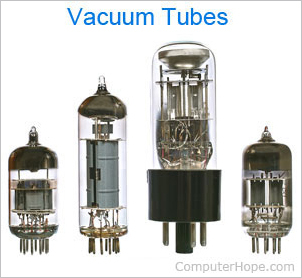
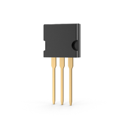
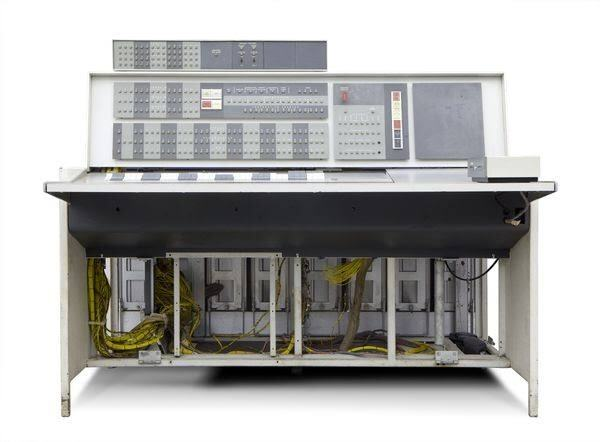
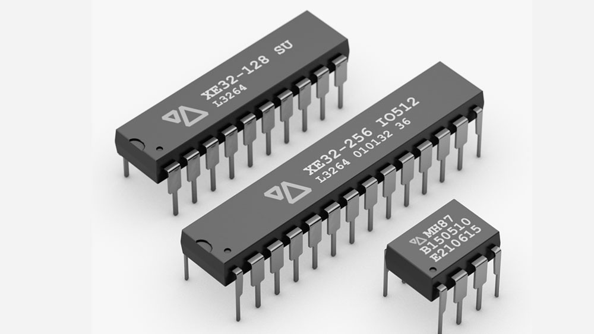
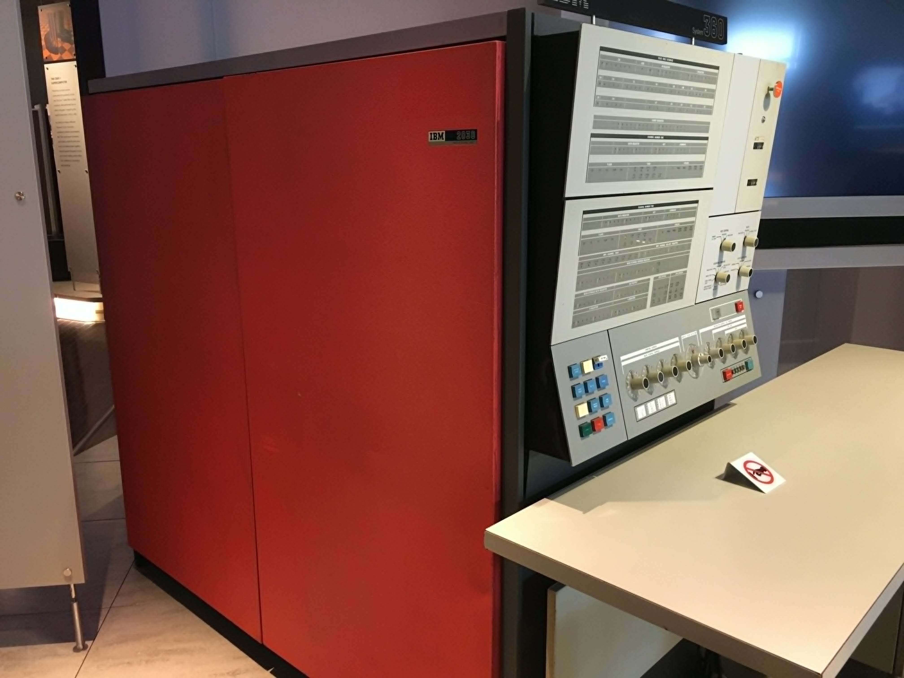

BSCS 3D
COMPUTER
ORGANIZATION
AND ARCHITECTURE
Basic Concepts & Computer Evolution
PAPAYA SA TINOLA
BSCS 3D • GROUP MEMBERS

Meet the team
Hover to see a glow, click a character to zoom in and read who they are. Each blank face is where a member's photo goes.
1.1 ORGANIZATION AND ARCHITECTURE
Organization vs. Architecture
Two terms often used together, but they describe different layers of a computer system.
Computer Architecture
The attributes of a system that are visible to a programmer — the ones that directly affect how a program executes. Also called Instruction Set Architecture (ISA): instruction formats, opcodes, registers, and how instructions affect memory.
Computer Organization
The operational units and their interconnections that actually realize the architecture — hardware details invisible to the programmer, like control signals, peripheral interfaces, and memory technology.
Example: Whether a computer has a multiply instruction is an architecture decision. Whether that instruction is built as its own hardware unit or done through repeated addition is an organization decision.
1.2 STRUCTURE AND FUNCTION
Four Basic Functions of a Computer
There are four basic functions that a computer can perform.
Data processing
Data may take a wide variety of forms, and the range of processing requirements is broad.
Data storage
Short-term storage for data being worked on and long-term storage of files.
Data movement
Input–output (I/O) when data are received from or delivered to a device directly connected to the computer; data communications when data are moved over longer distances.
Control
There must be control of the three functions just described. This control is exercised by the individual(s) who provides the computer with instructions.
1.2 STRUCTURE AND FUNCTION
Structural Components
Click a component to see what it does. Click the CPU to zoom into its internals.
COMPUTER
CPU
CONTROL UNIT
Tap a component
Click any box in the diagram to see what it does. Boxes with a purple outline zoom into their own internal structure.
1.2 STRUCTURE AND FUNCTION
The Multicore Computer
Same idea as before, zoomed one level deeper — from the motherboard, into the processor chip, into a single core.
MOTHERBOARD
PROCESSOR CHIP
CORE
Tap a component
Click any box to see what it does. Boxes with a purple outline zoom in — from the motherboard, into the chip, into one core.
1.2 STRUCTURE AND FUNCTION
Motherboard with Two Intel Quad-Core Xeon Processors
Important elements shown in the motherboard example.
PCI-Express slots
For a high-end display adapter and for additional peripherals.
Ethernet controller
Ethernet ports for network connections.
USB sockets
For peripheral devices.
Serial ATA (SATA) sockets
For connection to disk memory.
DDR interfaces
Interfaces for DDR (double data rate) main memory chips.
Intel 3420 chipset
An I/O controller for direct memory access operations between peripheral devices and main memory.
1.2 STRUCTURE AND FUNCTION
zEnterprise EC12 Processor Unit
Processor chip
Six cores, or processors, with two large L3 cache areas shared by all six processors.
L3 control logic
Controls traffic between the L3 cache and the cores and between the L3 cache and the external environment.
Storage control (SC)
Logic between the cores and the L3 cache.
Memory controller (MC)
Controls access to memory external to the chip.
GX I/O bus
Controls the interface to the channel adapters accessing the I/O.
1.2 STRUCTURE AND FUNCTION
zEnterprise EC12 Core Layout
Instruction sequence unit
Determines the sequence in which instructions are executed in a superscalar architecture.
Instruction fetch unit
Logic for fetching instructions.
Instruction decode unit
Fed from the IFU buffers and responsible for parsing and decoding z/Architecture operation codes.
Load-store unit
Contains the 96-kB L1 data cache and manages data traffic between the L2 data cache and the functional execution units.
1.2 STRUCTURE AND FUNCTION
zEnterprise EC12 Core Layout
Translation unit
Translates logical addresses from instructions into physical addresses in main memory and contains a translation lookaside buffer (TLB).
Fixed-point unit
Executes fixed-point arithmetic operations.
Binary floating-point unit
Handles binary and hexadecimal floating-point operations, as well as fixed-point multiplication operations.
Decimal floating-point unit
Handles fixed-point and floating-point operations on numbers stored as decimal digits.
Recovery unit
Keeps a copy of the complete system state, collects hardware fault signals, and manages hardware recovery actions.
1.2 STRUCTURE AND FUNCTION
Core Cache and Dedicated Co-Processor
Dedicated co-processor
Responsible for data compression and encryption functions for each core.
L1 instruction cache
Allows the IFU to prefetch instructions before they are needed.
Control logic
Manages the traffic through the two L2 caches.
L2 data cache
For all memory traffic other than instructions.
L2 instruction cache
Stores instructions in the second-level cache.
1.3 A BRIEF HISTORY OF COMPUTERS
First Generation — Vacuum Tubes
The first generation of computers used vacuum tubes for digital logic elements and memory.
The IAS Computer
A fundamental design approach first implemented in the IAS computer is known as the stored-program concept.
The IAS computer, although not completed until 1952, is the prototype of all subsequent general-purpose computers.

VACUUM TUBES1.3 A BRIEF HISTORY OF COMPUTERS
The IAS Computer
A stored-program computer and the prototype of subsequent general-purpose computers.
Main memory
Stores both data and instructions.
Arithmetic and logic unit (ALU)
Capable of operating on binary data.
Control unit
Interprets the instructions in memory and causes them to be executed.
Input–output (I/O) equipment
Operated by the control unit.
1.3 A BRIEF HISTORY OF COMPUTERS
IAS Registers
Memory buffer register
Contains a word transferred between memory or the I/O unit.
Memory address register
Specifies the address in memory of the word to be written or read.
Instruction register
Contains the 8-bit opcode instruction being executed.
Instruction buffer register
Temporarily holds the right-hand instruction from a word in memory.
Program counter
Contains the address of the next instruction pair to be fetched from memory.
Accumulator and multiplier quotient
Temporarily hold operands and results of ALU operations.
1.3 A BRIEF HISTORY OF COMPUTERS
The IAS Instruction Set
The IAS computer had a total of 21 instructions. These can be grouped as follows:
Data transfer
Move data between memory and ALU registers or between two ALU registers.
Unconditional branch
The sequence can be changed by a branch instruction, which facilitates repetitive operations.
Conditional branch
The branch can be made dependent on a condition, thus allowing decision points.
Arithmetic
Operations performed by the ALU.
Address modify
Permits addresses to be computed in the ALU and then inserted into instructions stored in memory.
| Instruction Type | Opcode | Symbolic Representation | Description |
|---|---|---|---|
| Data transfer | 00001010 | LOAD MQ | Transfer contents of register MQ to the accumulator AC |
| 00001001 | LOAD MQ,M(X) | Transfer contents of memory location X to MQ | |
| 00100001 | STOR M(X) | Transfer contents of accumulator to memory location X | |
| 00000001 | LOAD M(X) | Transfer M(X) to the accumulator | |
| 00000010 | LOAD –M(X) | Transfer –M(X) to the accumulator | |
| 00000011 | LOAD |M(X)| | Transfer absolute value of M(X) to the accumulator | |
| 00000100 | LOAD –|M(X)| | Transfer –|M(X)| to the accumulator | |
| Unconditional branch | 00001101 | JUMP M(X,0:19) | Take next instruction from left half of M(X) |
| 00001110 | JUMP M(X,20:39) | Take next instruction from right half of M(X) | |
| Conditional branch | 00001111 | JUMP + M(X,0:19) | If number in the accumulator is nonnegative, take next instruction from left half of M(X) |
| 00010000 | JUMP + M(X,20:39) | If number in the accumulator is nonnegative, take next instruction from right half of M(X) | |
| Arithmetic | 00000101 | ADD M(X) | Add M(X) to AC; put the result in AC |
| 00000111 | ADD |M(X)| | Add |M(X)| to AC; put the result in AC | |
| 00000110 | SUB M(X) | Subtract M(X) from AC; put the result in AC | |
| 00001000 | SUB |M(X)| | Subtract |M(X)| from AC; put the remainder in AC | |
| 00001011 | MUL M(X) | Multiply M(X) by MQ; put most significant bits of result in AC, put least significant bits in MQ | |
| 00001100 | DIV M(X) | Divide AC by M(X); put the quotient in MQ and the remainder in AC | |
| 00010100 | LSH | Multiply accumulator by 2; that is, shift left one bit position | |
| 00010101 | RSH | Divide accumulator by 2; that is, shift right one position | |
| Address modify | 00010010 | STOR M(X,8:19) | Replace left address field at M(X) by 12 rightmost bits of AC |
| 00010011 | STOR M(X,28:39) | Replace right address field at M(X) by 12 rightmost bits of AC |
1.3 A BRIEF HISTORY OF COMPUTERS
Second Generation — Transistors
The first major change in the electronic computer came with the replacement of the vacuum tube by the transistor.

TRANSISTORSThe transistor
The transistor, which is smaller, cheaper, and generates less heat than a vacuum tube, can be used in the same way as a vacuum tube to construct computers.
Unlike the vacuum tube, the transistor is a solid-state device, made from silicon.

IBM 70941.3 A BRIEF HISTORY OF COMPUTERS
Third Generation — Integrated Circuits
The next major change in the evolution of computers was the invention of the integrated circuit.
Microelectronics
The technology of fabrication of electronic devices out of tiny pieces of semiconductor material, primarily silicon, is known as microelectronics.

INTEGRATED CIRCUITSThe fundamental building block of all digital logic circuits is the gate. The basic gates used in digital logic are AND, OR, NOT, NAND, NOR, and XOR.
IBM System/360
The System/360 was the industry’s first planned family of computers. The family covered a wide range of performance and cost.

IBM SYSTEM/360Click a characteristic to see its meaning.
1.3 A BRIEF HISTORY OF COMPUTERS
Computer Generations at a Glance
Each generation brought a jump in processing performance built on new hardware technology.
| Gen | Dates | Technology | Typical Speed (ops/sec) |
|---|---|---|---|
| 1 | 1946–1957 | Vacuum tube | 40,000 |
| 2 | 1957–1964 | Transistor | 200,000 |
| 3 | 1965–1971 | Small/medium-scale integration | 1,000,000 |
| 4 | 1972–1977 | Large scale integration | 10,000,000 |
| 5 | 1978–1991 | Very large scale integration | 100,000,000 |
| 6 | 1991–present | Ultra large scale integration | >1,000,000,000 |
1.3 A BRIEF HISTORY OF COMPUTERS
Moore's Law
In 1965, Intel co-founder Gordon Moore observed that the number of transistors on a chip was doubling every year — a pace that later settled to roughly every 18 months, and held for decades.
- Chip cost stays flat even as density grows, so cost per unit of logic/memory keeps falling
- Components packed closer together means shorter electrical paths and higher speed
- Computers get smaller, fitting into more environments
- Lower power requirements
- Fewer inter-chip connections means higher reliability than soldered joints
1.3 A BRIEF HISTORY OF COMPUTERS
Later Generations: Memory & Microprocessors
Semiconductor Memory
Magnetic-core memory ruled the 1950s–60s. In 1970, Fairchild's semiconductor memory chip proved faster and eventually cheaper — by 1974 its price per bit dropped below core memory, kicking off a rapid, ongoing decline in memory cost.
Birth of the Microprocessor
Intel's 4004 (1971) packed an entire CPU onto one chip for the first time. It could barely add and multiply, but it started the evolution that led through the 8008 (1972) to the 8080 (1974) — the first true general-purpose microprocessor.
1.4 THE EVOLUTION OF THE INTEL X86 ARCHITECTURE
Evolution of Intel Microprocessors
Table 1.3 — Evolution of Intel Microprocessors (page 1 of 2)
| (a) 1970s Processors | |||||
|---|---|---|---|---|---|
| Characteristic | 4004 | 8008 | 8080 | 8086 | 8088 |
| Introduced | 1971 | 1972 | 1974 | 1978 | 1979 |
| Clock speeds | 108 kHz | 108 kHz | 2 MHz | 5 MHz, 8 MHz, 10 MHz | 5 MHz, 8 MHz |
| Bus width | 4 bits | 8 bits | 8 bits | 16 bits | 8 bits |
| Number of transistors | 2,300 | 3,500 | 6,000 | 29,000 | 29,000 |
| Feature size (µm) | 10 | 8 | 6 | 3 | 6 |
| Addressable memory | 640 bytes | 16 KB | 64 KB | 1 MB | 1 MB |
| (b) 1980s Processors | ||||
|---|---|---|---|---|
| Characteristic | 80286 | 386™ DX | 386™ SX | 486™ DX CPU |
| Introduced | 1982 | 1985 | 1988 | 1989 |
| Clock speeds | 6–12.5 MHz | 16–33 MHz | 16–33 MHz | 25–50 MHz |
| Bus width | 16 bits | 32 bits | 16 bits | 32 bits |
| Number of transistors | 134,000 | 275,000 | 275,000 | 1.2 million |
| Feature size (µm) | 1.5 | 1 | 1 | 0.8–1 |
| Addressable memory | 16 MB | 4 GB | 16 MB | 4 GB |
| Virtual memory | 1 GB | 64 TB | 64 TB | 64 TB |
| Cache | — | — | — | 8 kB |
| (c) 1990s Processors | ||||
|---|---|---|---|---|
| Characteristic | 486™ SX | Pentium | Pentium Pro | Pentium II |
| Introduced | 1991 | 1993 | 1995 | 1997 |
| Clock speeds | 16–33 MHz | 60–166 MHz | 150–200 MHz | 200–300 MHz |
| Bus width | 32 bits | 32 bits | 64 bits | 64 bits |
| Number of transistors | 1.185 million | 3.1 million | 5.5 million | 7.5 million |
| Feature size (µm) | 1 | 0.8 | 0.6 | 0.35 |
| Addressable memory | 4 GB | 4 GB | 64 GB | 64 GB |
| Virtual memory | 64 TB | 64 TB | 64 TB | 64 TB |
| Cache | 8 kB | 8 kB | 512 kB L1 and 1 MB L2 | 512 kB L2 |
1.4 THE EVOLUTION OF THE INTEL X86 ARCHITECTURE
Evolution of Intel Microprocessors
Table 1.3 — Evolution of Intel Microprocessors (page 2 of 2)
| (d) Recent Processors | ||||
|---|---|---|---|---|
| Characteristic | Pentium III | Pentium 4 | Core 2 Duo | Core i7 EE 4960X |
| Introduced | 1999 | 2000 | 2006 | 2013 |
| Clock speeds | 450–660 MHz | 1.3–1.8 GHz | 1.06–1.2 GHz | 4 GHz |
| Bus width | 64 bits | 64 bits | 64 bits | 64 bits |
| Number of transistors | 9.5 million | 42 million | 167 million | 1.86 billion |
| Feature size (nm) | 250 | 180 | 65 | 22 |
| Addressable memory | 64 GB | 64 GB | 64 GB | 64 GB |
| Virtual memory | 64 TB | 64 TB | 64 TB | 64 TB |
| Cache | 512 kB L2 | 256 kB L2 | 2 MB L2 | 1.5 MB L2/15 MB L3 |
| Number of cores | 1 | 1 | 2 | 6 |
1.4 THE EVOLUTION OF THE INTEL X86 ARCHITECTURE
Highlights of the Intel Product Line
Twelve landmark processors, each defined by the one big idea it introduced.
8080
The world's first general-purpose microprocessor. This was an 8-bit machine, with an 8-bit data path to memory.
8086
A far more powerful, 16-bit machine. The 8086 is the first appearance of the x86 architecture.
80286
This extension of the 8086 enabled addressing a 16-MB memory instead of just 1 MB.
80386
Intel's first 32-bit machine and the first Intel processor to support multitasking.
80486
Introduced more sophisticated cache technology, sophisticated instruction pipelining, and a built-in math coprocessor.
Pentium
Superscalar techniques are used to allow multiple instructions to execute in parallel.
Pentium Pro
Dynamic execution is introduced, including techniques for improved instruction execution and prediction.
Pentium II
Extends the Pentium family with multimedia and performance enhancements.
Pentium III
Adds Streaming SIMD Extensions (SSE) to support enhanced multimedia and floating-point performance.
Pentium 4
Continues the evolution of the Intel x86 family with higher clock rates and architectural enhancements.
Core
A processor family designed for improved performance and energy efficiency, continuing the move toward multicore designs.
Core 2
Introduced multicore designs in the Core family, with the Core 2 Duo providing two processing cores on one processor.
1.5 EMBEDDED SYSTEMS
Embedded Systems & the IoT
An embedded system is electronics and software built into a product — not a general-purpose computer. Billions ship every year, tucked inside phones, appliances, cars, and countless sensors.
Internet of Things (IoT)
The Internet of things (IoT) is a term that refers to the expanding interconnection of smart devices, ranging from appliances to tiny sensors.
Four Generations of Internet Deployment
PCs, servers, routers — bought by enterprise IT, mostly wired.
Machinery with embedded intelligence (medical devices, SCADA) bought by non-IT operations teams.
Smartphones, tablets, eBook readers — consumer devices, wireless.
Single-purpose wireless devices — this generation is what we call the IoT.
1.5 EMBEDDED SYSTEMS
Embedded Operating Systems
There are two general approaches to developing an embedded operating system (OS).
Adapt an Existing OS
Take an existing OS and adapt it for the embedded application. Examples include embedded versions of Linux, Windows, and Mac, as well as other commercial and proprietary operating systems specialized for embedded systems.
Design an OS Solely for Embedded Use
Design and implement an OS intended solely for embedded use. TinyOS is an example and is widely used in wireless sensor networks.
1.5 EMBEDDED SYSTEMS
Getting the Terms Straight
Application Processor
General-purpose enough to run a full OS like Linux or Android — e.g. a smartphone's main chip.
Dedicated Processor
Built for one job or a small set of tasks, which lets it be smaller and cheaper.
Microprocessor
A general-purpose chip — registers, ALU, control logic, often multiple cores and cache.
Microcontroller
A "computer on a chip" — processor plus ROM, RAM, clock, and I/O control all in one, optimized for low cost and low power rather than raw speed.
1.5 EMBEDDED SYSTEMS
Embedded vs. Deeply Embedded
A deeply embedded system is a stricter subset of embedded systems — one whose behavior is hard to observe by either the programmer or the user.
- Runs on a microcontroller, not a general microprocessor
- Not reprogrammable once its logic is burned into ROM
- No user interaction at all
- Often wireless, deployed in large sensor networks — and a major driver of the IoT
- Operates under extreme constraints on memory, size, time, and power
1.6 ARM ARCHITECTURE
ARM Architecture
ARM is a processor architecture used mainly for embedded and mobile systems. It is essentially a reduced instruction set computer (RISC) architecture and is designed around high performance, low power consumption, small size, and low cost.
What Makes ARM Different?
ARM develops processor architectures and related technologies rather than manufacturing the chips itself. Its designs can be used across a wide range of products, from smartphones and handheld devices to many other embedded systems.
The Licensing Model
ARM licenses processor designs and architectures to other companies. For a processor architecture, a customer buys the rights to design its own processor that is compliant with the ARM architecture.
1.6 ARM ARCHITECTURE
The Cortex Family
Application
Application processors for mobile and consumer devices. They support an MMU for full-feature OSs such as Linux, Android, and MS Windows.
Real-Time
Designed for real-time applications requiring rapid response and low latency. Examples include automotive braking systems and mass-storage controllers.
Microcontroller
Designed for the microcontroller domain, emphasizing low cost, low power, simplicity, and efficient use in embedded and IoT devices.
Cortex-M Series
Cortex-M0 — low cost, ultra low power, and simplicity for 8- and 16-bit applications. Cortex-M0+ — a more energy-efficient version of the M0. Cortex-M3 — emphasizes performance, energy efficiency, and comprehensive debug and trace features. Cortex-M4 — provides Cortex-M3 features plus additional instructions for digital signal processing tasks.
1.6 ARM ARCHITECTURE
Cortex-M3 Processor
The Cortex-M3 core makes use of separate buses for instructions and data. In addition to the core, the processor includes the following control, trace, and debug elements:
Nested Vectored Interrupt Controller
Provides configurable interrupt handling abilities to the processor. It facilitates low-latency exception and interrupt handling, and controls power management.
Embedded Trace Macrocell
An optional debug component that enables reconstruction of program execution. The ETM is designed to be a high-speed, low-power debug tool that only supports instruction trace.
Debug Access Port
Provides an interface for external debug access to the processor.
Basic Debug Functionality
Includes processor halt, single-step, processor core register access, unlimited software breakpoints, and full system memory access.
1.6 ARM ARCHITECTURE
Cortex-M3 Interfaces & Microcontroller Areas
Processor Interfaces
ICode interface — Fetches instructions from the code memory space.
SRAM & peripheral interface — Read/write interface to data memory and peripheral devices.
Bus matrix — Connects the core and debug interfaces to external buses on the microcontroller.
Memory protection unit — Protects critical data used by the operating system from user applications, separating processing tasks by disallowing access to each other’s data, disabling access to memory regions, allowing memory regions to be defined as read-only, and detecting unexpected memory accesses that could potentially break the system.
Core and I/O Areas
Core and memory — Includes the Cortex-M3 processor, SRAM data memory, and flash memory for storing program instructions and nonvarying application data. The SRAM stores variable data.
Parallel I/O ports — Configurable for a variety of parallel I/O schemes.
Serial interfaces — Supports various serial I/O schemes.
Analog interfaces — Analog-to-digital and digital-to-analog logic to support sensors and actuators.
Timing, Clock & Energy
Timers and triggers — Keeps track of timing and counts events, generates output waveforms, and triggers timed actions in other peripherals.
Clock management — Controls the clocks and oscillators on the chip. Multiple clocks and oscillators are used to minimize power consumption and provide short startup times.
Energy management — Manages the various low-energy modes of operation of the processor and peripherals to provide real-time management of the energy needs so as to minimize energy consumption.
Security & System Buses
Security — The chip includes a hardware implementation of the Advanced Encryption Standard (AES).
32-bit bus — Connects all of the components on the chip.
Peripheral bus — A network which lets the different peripheral module communicate directly with each other without involving the processor. This supports timing-critical operation and reduces software overhead.
1.7 CLOUD COMPUTING
What Is Cloud Computing?
NIST Definition
A model for enabling convenient, on-demand network access to a shared pool of configurable computing resources — networks, servers, storage, applications, services — that can be quickly provisioned with minimal management effort.
- Delivers economies of scale plus professional network and security management
- Users pay only for what they use — no hardware to buy or maintain
- Cloud networking is the infrastructure connecting subscribers to the cloud
- Cloud storage is database storage and applications hosted remotely
1.7 CLOUD COMPUTING
Three Cloud Service Models
Software as a Service
Ready-to-use applications running in the cloud, reached through a browser — e.g. Gmail, Salesforce.
Platform as a Service
An operating system in the cloud — languages, runtimes, and tools for building and deploying your own apps, like Google App Engine.
Infrastructure as a Service
Raw virtual machines, storage, and networking to run whatever software you need — e.g. Amazon EC2, Windows Azure.
1.8 KEY TERMS
Chapter 1 Key Terms
The core vocabulary of Chapter 1 — worth knowing cold before moving on.
PAPAYA SA TINOLA
THANK YOU
Any Questions?